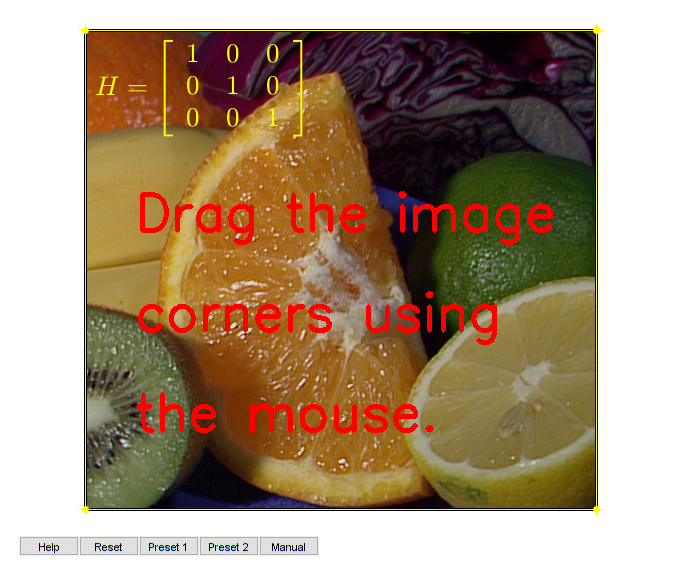

Interactive Perspective Transformation
This program demonstrates Perspective Transformation.
In this sample you will learn how to use the following OpenCV functions:
function varargout = perspective_transform_gui(im) % load source image if nargin < 1 img = imread(fullfile(mexopencv.root(),'test','fruits.jpg')); elseif ischar(im) img = imread(im); else img = im; end % create the UI h = buildGUI(img); if nargout > 0, varargout{1} = h; end end function onHelp(~,~) %ONHELP Display usage help dialog helpdlg({ 'This program demonstrates Perspective Transformation.' '' 'Drag the image corners using the mouse: Move the pointer over a' 'vertex. The pointer changes to a circle. Click and drag the vertex' 'to its new position.' '' 'You can also drag the image itself: move the pointer inside the' 'quadilateral. The pointer changes to a fleur shape. Click and drag' 'the mouse to move the image.' '' 'Note: you must not add or remove points from the polygon.' 'The cv.getPerspectiveTransform function requires exactly' '4 points to estimate the homography.' 'Also the function works best if no three points are collinear.' }); end function onDrag(newpos, handles) %ONDRAG Event handler for impoly % compute the perspective transform matrix from matching corners H = cv.getPerspectiveTransform(handles.pos, newpos); % trigger redraw with the new homography redraw(handles, H); end function redraw(handles, H) %REDRAW Warp and repaint image % apply the perspective transformation on the source image img2 = cv.warpPerspective(handles.img, H); % display warped image and homography matrix set(handles.hImg, 'CData',img2); set(handles.hTxt, 'String',mat2str_latex(H)); drawnow limitrate; end function showModalDialog(~,~,handles) %SHOWMODELDIALOG Display dialog to edit matrix % prompt for matrix using a model dialog d = dialog('Position',[50 50 280 140], 'Resize','off', 'Name','Homography'); movegui(d, 'center'); uicontrol('Parent',d, 'Style','push', 'Position',[80 10 60 20], ... 'String','Ok', 'Callback',{@onDialogClose,true}); uicontrol('Parent',d, 'Style','push', 'Position',[140 10 60 20], ... 'String','Cancel', 'Callback',{@onDialogClose,false}); t = uitable(d, 'Position',[15 40 250 90], ... 'Data',eye(3), 'ColumnWidth',{70}, 'ColumnEditable',true, ... 'TooltipString','fill the 3x3 homography matrix'); % wait for dialog to close before returning uiwait(d); function onDialogClose(~,~,flag) H = get(t, 'Data'); % get entered matrix delete(gcf); % close dialog if flag && ~any(isnan(H(:))) % update impoly position newpos = cv.perspectiveTransform(handles.pos, H); setPosition(handles.hPoly, newpos); % transform image redraw(handles, H); end end end function str = mat2str_latex(M) %MAT2STR_LATEX Convert numeric matrix to a latex table for display %str = mat2str(M,3); M = round(M, 9); % nicely rounded numbers (for stuff like 1e-15) str = ['$$H = \left[\begin{array}{ccc}' ... sprintf('%.3g & %.3g & %.3g \\\\ ',M(1,:)) ... sprintf('%.3g & %.3g & %.3g \\\\ ',M(2,:)) ... sprintf('%.3g & %.3g & %.3g ',M(3,:)) ... '\end{array}\right]$$']; end function img = print_instructions(img) %PRINT_INSTRUCTIONS Show help text on top of image if nargin < 1, img = zeros([512 512 3], 'uint8'); end opts = {'Color',[255 0 0], 'Thickness',3, 'FontScale',1.7}; img = cv.putText(img, 'Drag the image', [50 200], opts{:}); img = cv.putText(img, 'corners using', [50 300], opts{:}); img = cv.putText(img, 'the mouse.', [50 400], opts{:}); end function handles = buildGUI(img) %BUILDGUI Creates the UI handles = struct(); handles.img = print_instructions(img); % initial quadilateral (image corners), from top-left in clockwise order [h,w,~] = size(handles.img); handles.pos = [1 1; w 1; w h; 1 h]; % display image and homography matrix handles.hImg = imshow(handles.img); handles.hTxt = text(10, 10, mat2str_latex(eye(3)), ... 'Interpreter','latex', 'FontSize',20, 'Color','y', ... 'HorizontalAlignment','left', 'VerticalAlignment','top'); % create draggable polygon handles.hPoly = impoly(get(handles.hImg,'Parent'), handles.pos, 'Closed',true); setColor(handles.hPoly, 'y'); if false % restrict polygon inside image limits setPositionConstraintFcn(hPoly, ... makeConstrainToRectFcn('impozy',[1 w], [1 h])); end uicontrol('Style','pushbutton', 'Position',[20 20 60 20], 'String','Help', ... 'Callback',@onHelp); uicontrol('Style','pushbutton', 'Position',[80 20 60 20], 'String','Reset', ... 'Callback',@(~,~) setPosition(handles.hPoly, handles.pos)); uicontrol('Style','pushbutton', 'Position',[140 20 60 20], 'String','Preset 1', ... 'Callback',@(~,~) setPosition(handles.hPoly, [100 100; w-100 100; w h; 1 h])); uicontrol('Style','pushbutton', 'Position',[200 20 60 20], 'String','Preset 2', ... 'Callback',@(~,~) setPosition(handles.hPoly, [w+25 -25; 25 200; 175 h-10; w-100 h-50])); uicontrol('Style','pushbutton', 'Position',[260 20 60 20], 'String','Manual', ... 'Callback',{@showModalDialog,handles}); % set callback when dragging points addNewPositionCallback(handles.hPoly, @(p) onDrag(p, handles)); end